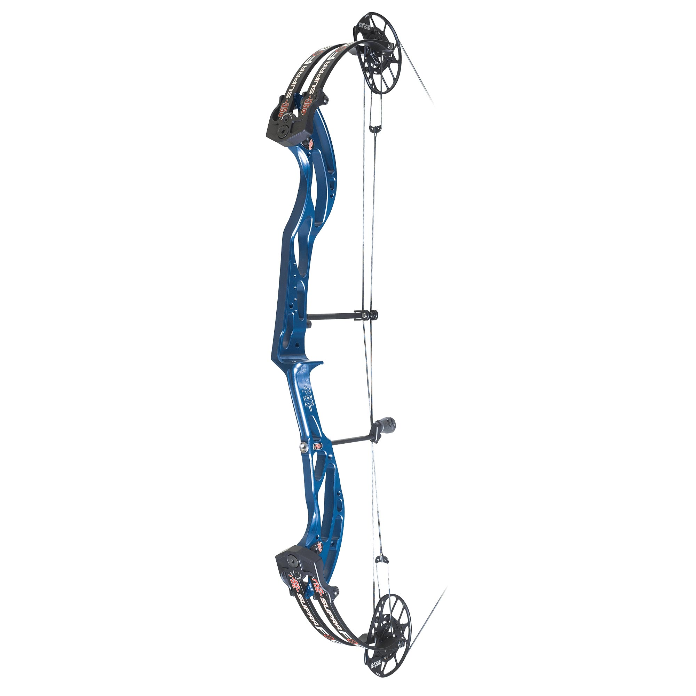

De meest voorkomende boog is de recurve boog. Iederen begint altijd met de recurve boog om de basis te leren.
De meest voorkomende boog is de recurve boog. Iederen begint altijd met de recurve boog om de basis te leren.

Een compoundboog ziet er heel anders uit dan de andere bogen, hij heeft namelijk cams(katrollen). Dit zorgt ervoor dat je met minder inspanning zwaarder kunt schieten en dat betekent dat je pijl met een hogere snelheid wegschiet.
De persoonlijkheid wordt ook omschreven als het unieke en stabiele patroon van psychologische en gedragskenmerken waardoor de ene mens zich van de andere onderscheidt. Eenvoudig uitgedrukt: de manier waarop iemand met uiteenlopende situaties omgaat of het karakteristieke gedragspatroon dat iemand in verschillende situaties vertoont, noemen we persoonlijkheid. Onderzoek laat zien dat de persoonlijkheid gedurende de levensloop kan veranderen ten gevolge van levensgebeurtenissen.